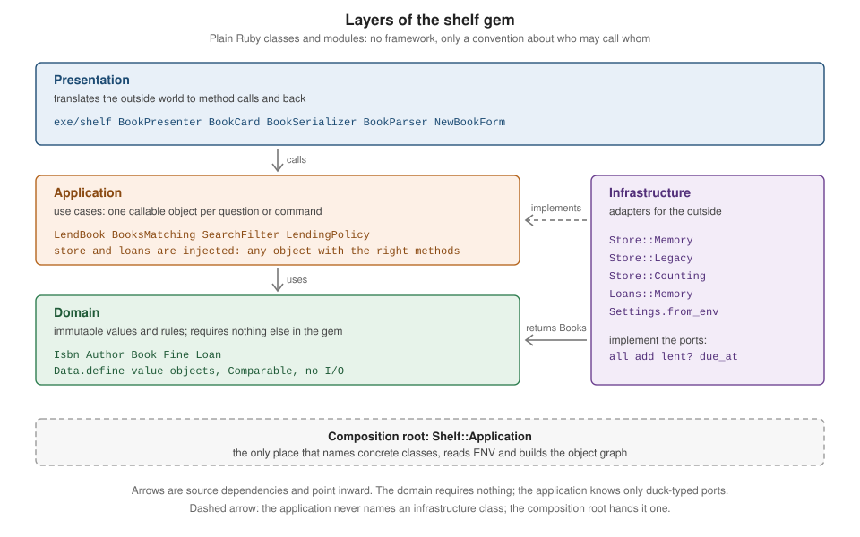

Application Architecture in Plain Ruby
|
This content was generated with the assistance of AI and should be verified against the official documentation before being relied on in production. |
This page is written against Ruby 4.0 (4.0.7, checked on 2026-10-18); features newer than Ruby 3.0 name the version that
introduced them. It answers a question the language itself does not: once a program outgrows one file, where does each
piece of code go, and who may call whom? Ruby has no interface, no package and no dependency-injection container in
its core, so architecture here is a set of conventions carried by ordinary objects: immutable values, objects with one
public call method, objects handed to constructors, and a handful of rules about what may require what. The page builds
those conventions step by step on the shelf library catalogue used throughout this section, without any framework.
Rails is out of scope for this section (see From plain Ruby to Rails for how the ideas map to it).
The language features the patterns rest on have their own pages:
Struct, Data and Value Objects and
Equality, Hashing and Comparison for value objects,
Pattern Matching for result objects,
Methods and Parameters and
Calling Methods and Argument Forwarding
for keyword defaults and ... forwarding, Modules and Mixins
for namespaces and mixins, and Threads and the GVL and
Fibers and the Fiber Scheduler for the concurrency
that makes global state dangerous. The design principles behind the structure are in
SOLID and Design Patterns and
Idioms, Style and Clean Code.
Every example on this page was syntax-checked with ruby -wc, run with ruby -w on Ruby 4.0.7 without warnings, and
linted with RuboCop 1.92 using the configuration of the running shelf gem (double-quoted strings, NewCops: enable,
Style/Documentation off). The values in # => comments are the real results. The classes are defined in the files
shown. Where a later listing needs an earlier one it loads it with require, for example require "shelf/lend_book":
for those runs the earlier definitions were saved as files under a lib/shelf/ directory. A few classes
(Shelf::Store::Memory, Shelf::Catalog, Shelf::Isbn) come from the running gem (see the shelf gem source).
What "architecture" means without a framework
Start small, split when it hurts
A catalogue script of fifty lines needs no layers, and adding them early is the commonest architectural mistake in Ruby
(YAGNI: you are not going to need it). Ruby makes the opposite move cheap: an object extracted from a method, a hash
replaced with a Data value, a constant replaced with a constructor argument. Split code when one of these hurts:
-
a change in one place forces edits in unrelated places (the rule that decides who may borrow a book is tangled with the code that prints a receipt);
-
a test needs a database, the network or the clock to check a rule that has nothing to do with them;
-
the same rule is written twice in two entry points (a command-line script and an HTTP handler);
-
a class has grown several unrelated reasons to change.
The patterns below are the standard answers, listed with the symptom each one cures. None of them is mandatory.
The four layers
The shelf gem is arranged in four layers, drawn in the figure. A layer is not a Ruby construct; it is a convention about which classes may mention which others, and the only enforcement is review, tests and tooling.

| Layer | Responsibility | Ruby constructs in the shelf gem |
|---|---|---|
Domain |
The vocabulary and the rules of the problem, free of I/O and of any framework. |
|
Application |
One class per use case: what the system does, in terms of the domain, with collaborators passed in. |
Callable service objects ( |
Infrastructure |
Everything that touches the outside: storage, files, the network, the clock, |
Store adapters ( |
Presentation |
Translating between the outside world’s shapes and the application’s method calls. |
The |
The dependency rule gives the arrows in the figure: source code in an inner layer never names a class from an outer
one. The domain requires nothing from the gem except other domain files. The application layer knows its collaborators
only as objects that answer a few messages (the ports: all, add, lent?), never as Store::Legacy. The outer
layers know the inner ones. Something has to build the concrete objects and connect them: the composition root (see
The composition root and test seams), a small class or script at the edge.
What Ruby gives you in place of interfaces
Other languages draw these boundaries with interface, protocol or trait declarations, access modifiers on packages,
and a dependency-injection container. Ruby uses four lighter tools instead:
-
Duck typing. A port is a set of messages, documented in prose, in an abstract base class, or in an RBS interface (see Adapters, ports and plugins). Nothing is declared at the call site.
-
Namespaces. A module such as
Shelf::Storegroups related classes and prevents name clashes; it has no behaviour of its own. Keep the module tree shallow and let it mirror the layers or the features, not both. -
Visibility.
privateandprivate_constantkeep helpers inside a class (see Visibility and Encapsulation). They are advisory, which is why a clear public surface matters more than hiding. -
Constructor arguments. Collaborators arrive as keyword arguments with sensible defaults (see Dependency injection with default keyword arguments). Without a container, this is all the injection most programs need.
A possible directory layout keeps one constant per file and requires the files in dependency order from lib/shelf.rb
(see Code Loading: require and autoload for
require_relative, autoload and the Zeitwerk loader, a community gem that was not run for this page):
lib/
shelf.rb # requires the rest, in dependency order
shelf/
version.rb
isbn.rb author.rb book.rb loan.rb fine.rb # domain
lend_book.rb books_matching.rb lending_policy.rb # application
store/memory.rb store/legacy.rb loans/memory.rb # infrastructure
settings.rb # infrastructure (ENV)
book_presenter.rb book_serializer.rb # presentation
application.rb # composition root
exe/
shelf # presentation entry pointLayering by directory is optional. What matters is that each file’s require lines respect the dependency rule: a quick
way to audit it is to search the domain files for any other layer’s constants, which a short test can automate.
Objects and the roles they play
A useful vocabulary for the objects in a Ruby design, independent of layers:
| Role | What it is | Example in the shelf gem |
|---|---|---|
Value object |
Defined by its content, immutable, compared with |
|
Entity or service |
Has an identity or a lifetime, or does work; compared by identity. |
|
Collaborator |
An object another object talks to, passed in rather than created inside. |
The |
Delegate |
A thin wrapper that adds one concern and forwards the rest. |
|
Callable |
An object whose one public job is |
|
Classes and modules also divide naturally. A class makes objects and can be subclassed once; a module cannot make
objects and is used in four ways: as a namespace (Shelf::Store), as a mixin that adds behaviour to several
classes (Comparable, Enumerable), as a function bag whose methods are called on the module itself
(Math, or module_function), and as an extension point (extend, prepend). Choose a class for something with
state and identity, a module for a behaviour shared across unrelated classes, and prefer composition (hold a
collaborator) over inheritance when the relationship is "has a" rather than "is a". The details are in
Modules and Mixins.
The domain layer: value objects
A value object is the cheapest and most valuable building block: a small immutable object that carries a validated value
and the operations that belong to it. Data.define (Ruby 3.2) builds it with keyword and positional construction,
==, eql?, hash, inspect and to_h, and freezes every instance. The Fine class below adds validation in
initialize, ordering through Comparable, an arithmetic operator that returns a new value with with, and a
formatted to_s.
# frozen_string_literal: true
require "shelf"
module Shelf
# A fine in cents: immutable, comparable, and usable as a Hash key.
Fine = Data.define(:cents) do
include Comparable
def initialize(cents: 0)
valid = cents.is_a?(Integer) && !cents.negative?
raise ArgumentError, "cents must be a non-negative Integer, got #{cents.inspect}" unless valid
super
end
def <=>(other) = other.is_a?(Fine) ? cents <=> other.cents : nil
def +(other) = with(cents: cents + other.cents)
def zero? = cents.zero?
def to_s = format("%<euros>d.%<rest>02d EUR", euros: cents / 100, rest: cents % 100)
end
end
a = Shelf::Fine.new(250)
b = Shelf::Fine.new(cents: 75)
total = a + b # => #<data Shelf::Fine cents=325>
total.to_s # => "3.25 EUR"
[a, b].min # => #<data Shelf::Fine cents=75>
a.between?(b, Shelf::Fine.new(1000)) # => true
Shelf::Fine.new # => #<data Shelf::Fine cents=0>
{ a => :open }[Shelf::Fine.new(250)] # => :open
a.frozen? # => true
begin
Shelf::Fine.new(-1)
rescue ArgumentError => e
e.message # => "cents must be a non-negative Integer, got -1"
end
begin
a < 5
rescue ArgumentError => e
e.message # => "comparison of Shelf::Fine with 5 failed"
end
begin
a.instance_variable_set(:@cents, 1)
rescue FrozenError => e
e.message # => "can't modify frozen Shelf::Fine: #<data Shelf::Fine cents=250>"
endSource: Data and Comparable
Points worth knowing about this class:
-
Dataconverts positional arguments to keywords before callinginitialize, so an overridinginitializealways receives keywords. Callingsuperwith no arguments forwards them unchanged. A default (cents: 0) makes the argument optional. -
Equality and
hashcome fromData, so instances are interchangeable asHashkeys and as members of aSet. TheComparablemixin adds ordering,between?,clampand the comparison operators from one<=>method. Returnnilfrom<=>for an unrelated type, as above; that makes the operators raiseArgumentErrorrather than answering wrongly. -
The instance is frozen, so a value can be shared freely between layers and threads. To "change" it, build a new one (
with, or a method that returnswith(...)). -
Money in cents as an
Integeravoids float rounding errors (see Numbers). -
Subclassing the result of
Data.define(class Fine < Data.define(:cents)) works but creates an extra anonymous class for no benefit; assign the result to a constant and pass a block, as here.
Wrapping primitives in value objects moves validation to the border: an Isbn that exists is valid, so no later
method has to re-check it. This is the idea behind keeping the domain layer free of I/O: its objects can be created in
a test with no setup at all. See Struct, Data and
Value Objects for Struct, pattern matching on Data and the choice between them.
The application layer: callable service objects
A service object implements one use case: its constructor takes the collaborators and the inputs, and its single
public method, conventionally call, does the work and returns the outcome. A one-line class method, def self.call(...) = new(...).call, is the usual shortcut. The ... forwards
every positional and keyword argument and the block, and accepts a leading argument since Ruby 3.0; see
Calling Methods and Argument Forwarding.
The outcome is a result object: a small value that says what happened, so callers branch on data instead of rescuing
exceptions for expected outcomes. Data classes make good result types, and a case/in expression consumes them.
# frozen_string_literal: true
require "shelf"
module Shelf
module Loans
# Infrastructure: where lent ISBNs are remembered.
class Memory
def initialize = @lent = {}
def lent?(isbn) = @lent.key?(isbn)
def add(isbn, due_at) = @lent[isbn] = due_at
def due_at(isbn) = @lent.fetch(isbn)
end
end
# Application layer: one use case, one callable object.
class LendBook
Success = Data.define(:book, :due_at)
Failure = Data.define(:reason)
def self.call(...) = new(...).call
def initialize(catalog:, isbn:, loans: Loans::Memory.new, clock: -> { Time.now }, loan_days: Shelf.config.loan_days)
@catalog = catalog
@isbn = isbn
@loans = loans
@clock = clock
@loan_days = loan_days
end
def call
book = @catalog.find { |b| b.isbn == @isbn }
return Failure.new(reason: :unknown_isbn) unless book
return Failure.new(reason: :already_lent) if @loans.lent?(@isbn)
due_at = @clock.call + (@loan_days * 86_400)
@loans.add(@isbn, due_at)
Success.new(book:, due_at:)
end
end
end
isbn = Shelf::Isbn.new("978-0-306-40615-7")
catalog = Shelf::Catalog.new.add(Shelf::Book.new(isbn, "The Dispossessed", Shelf::Author.new("Ursula K. Le Guin")))
loans = Shelf::Loans::Memory.new
clock = -> { Time.utc(2026, 10, 18, 9, 0) }
def report(result)
case result
in Shelf::LendBook::Success(book:, due_at:)
"lent #{book.title} until #{due_at.strftime('%Y-%m-%d')}"
in Shelf::LendBook::Failure(reason: :already_lent)
"sorry, already lent"
in Shelf::LendBook::Failure(reason:)
"failed: #{reason}"
end
end
report(Shelf::LendBook.call(catalog:, isbn:, loans:, clock:)) # => "lent The Dispossessed until 2026-11-01"
report(Shelf::LendBook.call(catalog:, isbn:, loans:, clock:)) # => "sorry, already lent"
report(Shelf::LendBook.call(catalog:, isbn: Shelf::Isbn.new("978-1-4028-9462-6"), loans:)) # => "failed: unknown_isbn"
begin
Shelf::LendBook.call(catalog:)
rescue ArgumentError => e
e.message # => "missing keyword: :isbn"
endWhat the example shows:
-
One public method.
LendBookhascalland nothing else public. Its instance variables are set in the constructor and never reassigned, so one instance describes one request and can be thrown away. -
Failure as data.
SuccessandFailureareDataclasses. The caller matches within Success(book:, due_at:), which usesdeconstruct_keys(defined byDatasince 3.2) and binds the named parts. Thecaseexpression above lists every result type. Acase/inwith no matching branch and noelseraisesNoMatchingPatternError, which is what you want when the result types are a closed set; addelsewhen they are not. -
Exceptions for the unexpected. A missing keyword is a programming error and raises
ArgumentError. An unknown ISBN is an expected outcome and is returned. Keep the two apart: see Exceptions and Error Handling. -
Time and storage are arguments. The clock is a lambda,
loansis any object that answerslent?andadd, andloan_daysdefaults to a value read from the global configuration at call time. Replacing any of them in a test needs no stubbing library. -
The
Loans::Memoryclass is infrastructure living in the same file for brevity; in a larger gem it would sit inloans/memory.rb.
Other shapes of callable work equally well and compose better, because Ruby treats anything that answers call like a
lambda. A to_proc method makes an object usable with &, Proc#>> and Proc#<< chain callables left to right or
right to left, and alias_method gives a second, more descriptive name to the same method.
# frozen_string_literal: true
require "shelf"
module Shelf
# A callable object: the one public method is #call, so it composes like a lambda.
class Slug
def self.call(...) = new.call(...)
def call(title) = title.downcase.gsub(/[^a-z0-9]+/, "-").delete_prefix("-").delete_suffix("-")
alias to_slug call
def to_proc = method(:call).to_proc
end
end
Shelf::Slug.call("The Dispossessed!") # => "the-dispossessed"
Shelf::Slug.new.call("A Wizard of Earthsea") # => "a-wizard-of-earthsea"
Shelf::Slug.new.to_slug("Dracula") # => "dracula"
%w[Dune Kindred].map(&Shelf::Slug.new) # => ["dune", "kindred"]
pipeline = :strip.to_proc >> Shelf::Slug.new >> ->(slug) { "/books/#{slug}" }
pipeline.call(" The Left Hand of Darkness ") # => "/books/the-left-hand-of-darkness"
pipeline.lambda? # => trueSource: Proc and Module#alias_method
The .() form (slug.(title)) is shorthand for slug.call(title); RuboCop’s Style/LambdaCall prefers the
explicit call. A chain of callables is the same idea as a Rack middleware stack: each link takes one value and returns
the next, so the pipeline’s only requirement is the call convention. Use it when a use case is a straight sequence of
transformations; use a service object with explicit steps when the flow has branches.
Why a service object and not a method on the model
Putting lend on Book or Catalog is tempting and is the right choice while the logic is one line. It stops being
the right choice when the operation needs a second collaborator (a loan repository, a clock, a mailer), when it appears
in more than one entry point, or when you want to test it without building a whole catalogue. A service object gives the
operation a name, a place for its collaborators, and a return type; the domain objects stay small. The cost is one more
class, which is why the extraction should follow the symptoms listed at the start of this page, not precede them.
Queries, filters, forms and policies
Four more small object types keep rules out of controllers, scripts and models. They share a shape: a constructor that takes collaborators, one public method that takes the input, and a return value that is either data or a decision.
# frozen_string_literal: true
require "shelf"
module Shelf
# Filter object: turns raw, untrusted parameters into a small immutable value.
SearchFilter = Data.define(:title, :author) do
def self.parse(params)
new(title: clean(params[:title]), author: clean(params[:author]))
end
def self.clean(value) = value.to_s.strip.then { it.empty? ? nil : it.downcase }
private_class_method :clean
def keep?(book)
(title.nil? || book.title.downcase.include?(title)) &&
(author.nil? || book.author.name.downcase.include?(author))
end
end
# Query object: one question asked of the catalogue, returning a lazy enumerator.
class BooksMatching
def initialize(catalog) = @catalog = catalog
def call(filter) = @catalog.lazy.select { filter.keep?(it) }
end
# Form object: validates input and only then builds domain objects.
class NewBookForm
attr_reader :errors
def initialize(isbn:, title:, author:)
@isbn = isbn
@title = title
@author = author
@errors = {}
end
def valid?
@errors = {}
@errors[:title] = "can't be blank" if @title.to_s.strip.empty?
@errors[:author] = "can't be blank" if @author.to_s.strip.empty?
@errors[:isbn] = "is not a valid ISBN-13" unless isbn
@errors.empty?
end
def to_book
raise Shelf::Error, "form is invalid: #{errors.keys.join(', ')}" unless valid?
Book.new(isbn, @title.strip, Author.new(@author.strip))
end
private
def isbn
Isbn.new(@isbn)
rescue ArgumentError
nil
end
end
# Policy object: a decision plus its reason, with no side effects.
class LendingPolicy
Decision = Data.define(:allowed, :reason)
def initialize(max_loans: 3) = @max_loans = max_loans
def call(fine_cents:, active_loans:)
return Decision.new(false, "too many loans") if active_loans >= @max_loans
case fine_cents
when ...500 then Decision.new(true, nil)
when 500...2000 then Decision.new(true, "pay your fines soon")
else Decision.new(false, "fines of #{fine_cents} cents are due")
end
end
end
end
catalog = Shelf::Catalog.new
[["978-0-306-40615-7", "The Dispossessed", "Ursula K. Le Guin"],
["978-1-4028-9462-6", "A Wizard of Earthsea", "Ursula K. Le Guin"],
["978-0-14-143951-8", "Dracula", "Bram Stoker"]].each do |isbn, title, author|
catalog.add(Shelf::NewBookForm.new(isbn:, title:, author:).to_book)
end
filter = Shelf::SearchFilter.parse({ title: " ", author: "LE GUIN " })
filter.to_h # => {title: nil, author: "le guin"}
Shelf::BooksMatching.new(catalog).call(filter).map(&:title).to_a # => ["The Dispossessed", "A Wizard of Earthsea"]
form = Shelf::NewBookForm.new(isbn: "978-0-306-40615-8", title: " ", author: "Ana")
form.valid? # => false
form.errors # => {title: "can't be blank", isbn: "is not a valid ISBN-13"}
policy = Shelf::LendingPolicy.new
policy.call(fine_cents: 100, active_loans: 1) # => #<data Shelf::LendingPolicy::Decision allowed=true, reason=nil>
policy.call(fine_cents: 750, active_loans: 1).reason # => "pay your fines soon"
policy.call(fine_cents: 5000, active_loans: 1).reason # => "fines of 5000 cents are due"
policy.call(fine_cents: 0, active_loans: 3).allowed # => falseSource: Ruby 4.0 documentation: Control Expressions (beginless and endless ranges in when) and Enumerator::Lazy
-
Filter object (
SearchFilter). Turns untrusted, loosely shaped parameters (strings, blanks, mixed case) into a small immutable value in one place. Everything afterparsereceives clean data. The cleaning helper is aprivate_class_method, so the public surface isparse, the accessors andkeep?. -
Query object (
BooksMatching). One question asked of the catalogue. It takes the source in the constructor and the filter incall, and returns a lazy enumerator, so the caller decides how much to read (see Enumerators and Lazy Evaluation). Keeping the query separate fromCatalogstops the catalogue growing a method for every report anyone ever wants. -
Form object (
NewBookForm). Gathers raw input, validates it, collects error messages, and only then builds domain objects. The errors are aHashkeyed by field;to_bookraises aShelf::Errorif called on an invalid form. The privateisbnmethod turns theArgumentErrorfromIsbn.newintonilso the form can report it as a field error. Use a form object when the input shape differs from the domain shape or when several records are created together. -
Policy object (
LendingPolicy). A decision with a reason and no side effects. Because it takes plain numbers, it is trivially testable and can be reused by the command line and by a web handler. Thecasewith a beginless range (when ...500) and a bounded one (when 500...2000) reads as a table of thresholds;...excludes the end, and a value outside every range falls toelse.
The decision type (Decision) is nested inside the policy so that its full name, LendingPolicy::Decision, says where
it belongs. When several rules combine (fines, loan counts, membership state), keep one object per rule and compose them,
rather than one method with a long chain of conditions.
Adapters, ports and plugins
A port is the set of messages the application needs from the outside world; an adapter is a class that provides them
by wrapping a particular technology. In Ruby the port is usually informal. The shelf gem’s catalogue needs all and
add from a store, and LendBook needs lent? and add from a loan repository. Any object that answers those works:
Store::Memory, a vendor client wrapped in an adapter, or a ten-line fake in a test.
# frozen_string_literal: true
require "delegate"
require "shelf"
module Shelf
module Store
# The port: what the application layer expects of any store.
class Base
@registry = {}
class << self
attr_reader :registry
# Every named subclass registers itself under its lower-cased class name.
def inherited(subclass)
super
Base.registry[subclass.name.split("::").last.downcase.to_sym] = subclass if subclass.name
end
def build(name, ...)
Base.registry.fetch(name) { raise Shelf::Error, "unknown store: #{name.inspect}" }.new(...)
end
end
def all = raise(NoMethodError, "#{self.class} must implement #all")
def add(_book) = raise(NoMethodError, "#{self.class} must implement #add")
end
# An adapter around a vendor client with a different vocabulary.
class Legacy < Base
def initialize(client)
super()
@client = client
end
def all = @client.fetch_rows.map { |isbn, title, author| Book.new(Isbn.new(isbn), title, Author.new(author)) }
def add(book)
@client.insert_row([book.isbn.digits, book.title, book.author.name])
self
end
end
# A decorator that adds behaviour to any store without changing its interface.
class Counting < SimpleDelegator
attr_reader :reads
def initialize(store)
super
@reads = 0
end
def all
@reads += 1
super
end
end
end
end
# A stand-in for a third-party client with its own vocabulary.
LegacyClient = Struct.new(:rows) do
def fetch_rows = rows.dup
def insert_row(row) = rows << row
end
book = Shelf::Book.new(Shelf::Isbn.new("978-0-306-40615-7"), "The Dispossessed", Shelf::Author.new("Ursula K. Le Guin"))
legacy = Shelf::Store::Base.build(:legacy, LegacyClient.new([]))
store = Shelf::Store::Counting.new(legacy)
catalog = Shelf::Catalog.new(store:).add(book)
catalog.map(&:to_s) # => ["The Dispossessed by Ursula K. Le Guin"]
store.reads # => 1
Shelf::Store::Base.registry.keys # => [:legacy]
begin
Shelf::Store::Base.build(:redis)
rescue Shelf::Error => e
e.message # => "unknown store: :redis"
end
begin
Incomplete = Class.new(Shelf::Store::Base) # rubocop:disable Style/EmptyClassDefinition
Incomplete.new.all
rescue NoMethodError => e
e.message # => "Incomplete must implement #all"
end
Shelf::Store::Base.registry.keys # => [:legacy]Source: Class#inherited and SimpleDelegator
Four techniques appear in this listing:
-
An abstract base class that fails loudly.
Store::Basedocuments the port by defining the methods and raisingNoMethodErrorfrom each, with a message naming the missing method. The widely copied alternative,NotImplementedError, is a poor choice: it descends fromScriptError, notStandardError, so a plainrescuedoes not catch it, and it signals "this platform does not support the call" rather than "a subclass forgot to implement this". UseNoMethodErroror a project error. -
A self-registering plugin hook. Defining
inheritedon a base class lets every subclass register itself under a name, so adding an adapter means adding a file. Two rules apply: callsuper, so otherinheritedhooks (including Ruby’s own) still run, and remember thatsubclass.nameisnilfor an anonymous class created withClass.new, because the constant is assigned only after the hook runs; hence theif subclass.nameguard. In the listing,Legacyregisters as:legacy, while the anonymous subclass assigned toIncompleteat the end does not, so the registry still lists only:legacy. -
An adapter (
Store::Legacy) translates between vocabularies: the vendor client speaks in rows andfetch_rows, the application speaks inBookvalues andall. The translation lives in one class; the rest of the system never sees a row. When wrapping a library whose calls you want to keep out of your code, call it from exactly one adapter and fake it in tests. -
A delegate that adds a concern (
Store::Counting) subclassesSimpleDelegator, forwards everything to the object it wraps, and overrides one method, callingsuperto reach the wrapped object.SimpleDelegatorcomes from thedelegatedefault gem, sorequire "delegate"is needed.
The registry here is a class-level instance variable on the base class, read with a class << self accessor, which is the
form to prefer over a class variable (@@registry) because subclasses do not share it by accident. The factory method
build(name, ...) forwards the remaining arguments to the chosen class’s new.
A port can also be written down for tools. Type checkers read RBS, whose interface declarations (names start with an
underscore) describe a structural type: any class with matching methods satisfies it, with no include. The shelf gem’s
Catalog#initialize takes store: untyped in its signature; an interface tightens that:
module Shelf
# What the application layer expects of any store.
interface _Store
def all: () -> Array[Book]
def add: (Book book) -> self
end
class Catalog
include Enumerable[Book]
def initialize: (?store: _Store) -> void
end
endThis signature was parsed with rbs parse; type-checking against it is the subject of
Type Checking with RBS, TypeProf,
Steep and Sorbet. When you do not use a checker, a test that runs the same examples against every adapter (a shared
contract) gives the same safety.
Dependency injection with default keyword arguments
Dependency injection means that an object receives its collaborators instead of creating them. In Ruby the whole mechanism fits in a constructor signature: required keyword arguments for things the object cannot guess, and keyword arguments with default values for collaborators that have a sensible standard choice.
The signature of LendBook above is initialize(catalog:, isbn:, loans: Loans::Memory.new, clock: -> { Time.now },
loan_days: Shelf.config.loan_days). One definition supports three uses: a quick script relies on the defaults, the
application passes the shared collaborators, and a test passes fakes.
# frozen_string_literal: true
require "shelf"
require "shelf/lend_book"
isbn = Shelf::Isbn.new("978-0-306-40615-7")
book = Shelf::Book.new(isbn, "The Dispossessed", Shelf::Author.new("Ursula K. Le Guin"))
catalog = Shelf::Catalog.new.add(book)
shared = Shelf::Loans::Memory.new
# 1. A quick script relies on the defaults: a fresh repository and the system clock.
Shelf::LendBook.call(catalog:, isbn:).class # => Shelf::LendBook::Success
Shelf::LendBook.call(catalog:, isbn:).class # => Shelf::LendBook::Success
# 2. The application passes the one shared repository: the second call is refused.
Shelf::LendBook.call(catalog:, isbn:, loans: shared).class # => Shelf::LendBook::Success
Shelf::LendBook.call(catalog:, isbn:, loans: shared).class # => Shelf::LendBook::Failure
# 3. A test replaces the clock and the number of days.
result = Shelf::LendBook.call(catalog:, isbn:, clock: -> { Time.utc(2026, 1, 1) }, loan_days: 1)
result.due_at.iso8601 # => "2026-01-02T00:00:00Z"Source: Ruby 4.0 documentation: Methods (keyword arguments)
Rules for doing it well:
-
Defaults are evaluated on every call, so
Loans::Memory.newcreates a fresh repository each time. That is correct for a throwaway default and wrong for shared state: a default that must be the same object everywhere should come from a single place (the composition root), not from a default expression. -
Inject the clock, the random generator, the logger and the environment as well. A lambda
-> { Time.now }is enough; the same applies toENV, which can be replaced by any object that responds tofetch(aHash). -
Depend on messages, not on classes. Do not check
is_a?on a collaborator; if you must validate, userespond_to?(:lent?)at the border, or let the first call fail withNoMethodError, which names the missing method. -
Avoid a default that reaches into global state unless the global is itself configuration read once. Here
Shelf.config.loan_daysis a plain number, which is harmless; a default that reads a mutable singleton hides a dependency from the signature. -
Do not build a container first. A hash of lambdas or a few lines in the composition root are enough for most programs. Reach for a gem only when the object graph is large enough that wiring it by hand obscures the program.
Ruby also lets a class accept a collaborator through a block or a class-level setting, but a constructor argument is the most visible and the easiest to test. For the SOLID principle behind it (depend on abstractions) see SOLID and Design Patterns.
Presenters, decorators and serializers
The outermost layer shapes data for people and for other programs. Plain classes are enough.
# frozen_string_literal: true
require "delegate"
require "json"
require "shelf"
module Shelf
# Open presenter: a decorator that forwards everything it does not override.
class BookPresenter < SimpleDelegator
def label = "#{title} (#{author.name})"
def isbn_with_hyphens = isbn.digits.sub(/\A(\d{3})(\d)(\d{3})(\d{5})(\d)\z/, '\1-\2-\3-\4-\5')
end
# Closed presenter: exposes exactly what the view needs and nothing else.
class BookCard
def initialize(book) = @book = book
def title = @book.title
def author = @book.author.name
end
# Serializer: domain object in, plain Hash out. No JSON dependency here.
class BookSerializer
def initialize(book) = @book = book
def as_json = { isbn: @book.isbn.digits, title: @book.title, author: @book.author.name }
end
# Boundary parser: untrusted JSON in, domain object out.
module BookParser
def self.call(json)
case JSON.parse(json, symbolize_names: true)
in { isbn: String => isbn, title: String => title, author: { name: String => name } }
Book.new(Isbn.new(isbn), title, Author.new(name))
end
end
end
end
book = Shelf::Book.new(Shelf::Isbn.new("978-0-306-40615-7"), "The Dispossessed", Shelf::Author.new("Ursula K. Le Guin"))
presenter = Shelf::BookPresenter.new(book)
presenter.label # => "The Dispossessed (Ursula K. Le Guin)"
presenter.isbn_with_hyphens # => "978-0-306-40615-7"
presenter.title # => "The Dispossessed"
presenter.eql?(book) # => true
book.eql?(presenter) # => false
presenter.is_a?(Shelf::Book) # => false
presenter.__getobj__.equal?(book) # => true
card = Shelf::BookCard.new(book)
card.respond_to?(:isbn) # => false
serializer = Shelf::BookSerializer.new(book)
serializer.as_json # => {isbn: "9780306406157", title: "The Dispossessed", author: "Ursula K. Le Guin"}
JSON.generate(serializer.as_json).start_with?('{"isbn":"9780306406157"') # => true
wire = '{"isbn":"978-0-306-40615-7","title":"The Dispossessed","author":{"name":"Ursula K. Le Guin"}}'
Shelf::BookParser.call(wire).eql?(book) # => true
begin
Shelf::BookParser.call('{"title":"No ISBN"}')
rescue NoMatchingPatternKeyError => e
e.message # => "{title: \"No ISBN\"}: key not found: :isbn"
endSource: SimpleDelegator, JSON.parse and Pattern Matching
-
Open presenter (
BookPresenter, aSimpleDelegator): wraps a domain object, adds view-specific methods (label,isbn_with_hyphens) and forwards everything else, so the view can calltitledirectly. It is the decorator pattern with the boilerplate removed. Its drawbacks are in the listing:eql?is delegated one way only (presenter.eql?(book)is true,book.eql?(presenter)is false), andis_a?(Shelf::Book)is false because the presenter is a different object. Compare with__getobj__when identity matters, and do not put presenters into collections that mix wrapped and unwrapped objects. -
Closed presenter (
BookCard): wraps the object and exposes only the methods the view needs. Nothing leaks, which is an advantage when the domain object has many methods or sensitive fields. It needs one method per exposed field. Choose open for convenience inside one application, closed at an API boundary. -
Serializer (
BookSerializer): converts a domain object to plainHash,Array,Stringand number data. It does not know JSON; the caller generates the text withJSON.generate. Splitting these two steps lets you test the shape without parsing text and swap the format (JSON, YAML, CSV; see Serialization: JSON, YAML, CSV and Marshal). -
Boundary parser (
BookParser): the inverse.JSON.parse(json, symbolize_names: true)yields symbol keys, and acase/inpattern both validates the shape and binds the parts (String => isbn). Anything that does not match raisesNoMatchingPatternKeyError(a missing key; it is a subclass ofNoMatchingPatternError) or plainNoMatchingPatternError(a wrong type or value, with a message such asString === 5 does not return true), so malformed input is rejected at the edge, before it reaches the domain. Convert to domain values immediately (Isbn.new) so later code never handles raw strings.
Prefer symbols as hash keys inside the program and convert at the boundary: symbol keys are the convention for data you control, and string keys are what comes off the wire.
Global state, fiber-local storage and thread-local storage
Anything reachable from a constant, a class-level instance variable, or $ global is shared by every thread and fiber.
Some sharing is wanted (a frozen configuration), and the rest is a source of races and of tests that depend on order.
A few rules cover most of it:
-
Prefer an argument. Pass the current member to the use case that needs it. This is the clearest option and the one that costs nothing.
-
Freeze what you share. Build a configuration object once, freeze it, and publish it. Mutable state shared between threads needs a
Mutex(the shelfCatalogguards its store with one). -
Initialize eagerly.
@instance ||= new, the textbook lazy singleton, is not thread-safe: two threads can both seenil, both construct, and one result is lost. Assign the object when the file loads, or guard creation with aMutex, or use theSingletonmodule from thesingletondefault gem, which builds the instance under a lock. Note that theShelf.configmethod in the running gem uses@config ||= ..., which is acceptable for a value read at start-up but would not be for one created while serving concurrent requests. -
Use a per-request context for what is genuinely ambient, such as the signed-in member in a handler or a request id in a log line, and reset it deterministically.
Ruby offers three storage scopes for ambient data, and the names are misleading:
| Mechanism | Visible from | Notes |
|---|---|---|
|
The current fiber and, as a copy, every fiber and thread created from it afterwards (since 3.2) |
Keys must be symbols. |
|
The current fiber only (despite the name) |
Fiber-local. A fiber created by |
|
Every fiber of that thread, but not other threads |
Truly thread-local. Not inherited by |
# frozen_string_literal: true
require "shelf"
module Shelf
# Per-request context: explicit, resettable, and isolated per fiber.
module Current
KEY = :shelf_member
def self.member = Fiber[KEY]
def self.with(member)
previous = Fiber[KEY]
Fiber[KEY] = member
yield
ensure
Fiber[KEY] = previous
end
end
end
Shelf::Current.member # => nil
Shelf::Current.with("ana") do
Shelf::Current.member # => "ana"
Fiber.new { Shelf::Current.member }.resume # => "ana"
Thread.new { Shelf::Current.member }.value # => "ana"
Fiber.new { Shelf::Current.with("ben") { Shelf::Current.member } }.resume # => "ben"
Shelf::Current.member # => "ana"
end
Shelf::Current.member # => nil
# The older, fiber-local hash behind Thread#[]: not inherited by new fibers.
Thread.current[:request_id] = 42
Thread.current[:request_id] # => 42
Fiber.new { Thread.current[:request_id] }.resume # => nil
# Thread variables are shared by every fiber of the thread.
Thread.current.thread_variable_set(:locale, :es)
Fiber.new { Thread.current.thread_variable_get(:locale) }.resume # => :es
Thread.new { Thread.current.thread_variable_get(:locale) }.value # => nilThe Current module is a pattern, not a library: a tiny object with a block form that sets a value, yields, and restores
the previous value in ensure. The block form guarantees cleanup even when the body raises. In the listing, a new fiber
and a new thread both inherit "ana", a nested with shadows it, and the outer value is back afterwards. The fiber-local
Thread.current[:request_id] is invisible to a new fiber, which is why code written for threads can break when
moved to fibers with a scheduler. Fiber storage was designed to fix this. Assigning nil to a storage key deletes it, and
Fiber#storage= is documented as experimental, so assign individual keys rather than the whole hash.
Two cautions. Ambient state makes dependencies invisible, so keep it to a few well-named values and never store domain
objects that are expensive to build. And in tests, reset it in teardown (or use the block form) so one test cannot leak
a signed-in user into the next.
Configuration objects
Configuration is data read from the environment (variables, files, command-line options) that changes between
deployments. Treat it as a value: read it once at the edge, validate it, freeze it, and pass it down. Do not call ENV
from the middle of the program.
# frozen_string_literal: true
require "shelf"
require "yaml"
module Shelf
# Configuration object: built once at the edge, validated, frozen, and passed in.
Settings = Data.define(:store, :loan_days, :base_url, :on_overdue) do
# Any object with #fetch works: ENV in production, a Hash in tests.
def self.from_env(env = ENV)
new(
store: env.fetch("SHELF_STORE", "memory").to_sym,
loan_days: Integer(env.fetch("SHELF_LOAN_DAYS", "14")),
base_url: env.fetch("SHELF_BASE_URL"),
on_overdue: ->(loan) { warn "overdue: #{loan}" }
)
end
def initialize(store:, loan_days:, base_url:, on_overdue: nil)
raise ArgumentError, "loan_days must be positive" unless loan_days.positive?
super(store:, loan_days:, base_url: base_url.delete_suffix("/"), on_overdue: on_overdue || ->(_loan) {})
end
end
end
env = { "SHELF_BASE_URL" => "https://library.example/", "SHELF_LOAN_DAYS" => "21" }
settings = Shelf::Settings.from_env(env)
settings.to_h.except(:on_overdue) # => {store: :memory, loan_days: 21, base_url: "https://library.example"}
settings.frozen? # => true
settings.on_overdue.call("Dune") # => nil
begin
Shelf::Settings.from_env({})
rescue KeyError => e
e.message # => "key not found: \"SHELF_BASE_URL\""
end
begin
Shelf::Settings.from_env(env.merge("SHELF_LOAN_DAYS" => "two weeks"))
rescue ArgumentError => e
e.message # => "invalid value for Integer(): \"two weeks\""
end
# Per-environment files with YAML anchors, loaded safely (aliases must be allowed explicitly).
yaml = <<~YAML
default: &default
loan_days: 14
store: memory
production:
<<: *default
loan_days: 28
YAML
YAML.safe_load(yaml, aliases: true, symbolize_names: true).fetch(:production) # => {loan_days: 28, store: "memory"}
begin
YAML.safe_load(yaml)
rescue Psych::AliasesNotEnabled => e
e.message # => "Alias parsing was not enabled. To enable it, pass `aliases: true` to `Psych::load` or `Psych::safe_load`."
endSource: ENV.fetch, Kernel#Integer and Psych.safe_load
-
ENV.fetch.ENV["X"]returnsnilfor a missing variable, which turns a deployment mistake into aNoMethodErrorfar away.fetchwith no default raisesKeyErrorat start-up, naming the variable.fetchwith a default documents the fallback in one place. TheHashused in the example responds tofetchthe same way, so the method takesenvas an argument and tests need noENVmanipulation. -
Parse strictly. Every
ENVvalue is aString.Integer("14")converts andInteger("two weeks")raisesArgumentError;to_iwould silently return0. Normalise at the same place (the trailing slash of the URL). -
A
Dataconfiguration object is frozen and comparable. Itsinitializevalidates, and the factoryfrom_envreads. Splitting the two keeps validation available to code that builds settings by hand. -
Lambdas as configuration. A callback such as
on_overdueis configuration too: the default does nothing, production supplies a real one, and a test supplies a recorder. The example’s default writes withwarn, which goes to standard error, not standard output. -
YAML files and anchors. Per-environment files commonly define a
defaultmapping with an anchor (&default) and merge it with<<: *default. Aliases are rejected byYAML.safe_loadunless you passaliases: true, which is the safe way to allow them;Psych::AliasesNotEnabledis the error otherwise.symbolize_names: trueyields symbol keys. Never useYAML.loadon untrusted input (see Security). -
Logging. Send diagnostics to a
Loggerobject passed in as a collaborator rather than callingputs;Loggeris a bundled gem in Ruby 4.0, so a project run under Bundler listsloggerin its Gemfile. -
Secrets belong in the environment or a secret store, never in the repository; the example values are public placeholders.
See Ruby Command Line and Environment for ENV
itself.
The composition root and test seams
Every dependency in the examples above is passed in. Someone has to create the real objects: the composition root, the one place that knows every concrete class. It sits at the edge (the entry point of a script or a service), builds the graph once, and hands the use cases their collaborators. The class below does that for the shelf gem.
# frozen_string_literal: true
require "shelf"
require "shelf/lend_book"
require "shelf/settings"
module Shelf
# Composition root: the one place that knows every concrete class.
class Application
STORES = { memory: Store::Memory }.freeze
attr_reader :catalog
def initialize(settings, clock: -> { Time.now })
@settings = settings
@catalog = Catalog.new(store: STORES.fetch(settings.store).new)
@loans = Loans::Memory.new
@clock = clock
end
def lend(isbn)
LendBook.call(catalog:, isbn:, loans: @loans, clock: @clock, loan_days: @settings.loan_days)
end
end
end
settings = Shelf::Settings.from_env({ "SHELF_BASE_URL" => "https://library.example", "SHELF_LOAN_DAYS" => "7" })
app = Shelf::Application.new(settings, clock: -> { Time.utc(2026, 10, 18) })
isbn = Shelf::Isbn.new("978-0-306-40615-7")
app.catalog.add(Shelf::Book.new(isbn, "The Dispossessed", Shelf::Author.new("Ursula K. Le Guin")))
app.lend(isbn).due_at.iso8601 # => "2026-10-25T00:00:00Z"
app.lend(isbn).reason # => :already_lentSource: Time#iso8601 (core since Ruby 3.4; earlier versions need require "time")
The listing loads the LendBook and Settings listings from files, as described at the top of the page.
Application is the only class that mentions both Store::Memory and LendBook; the use cases know neither each
other nor an infrastructure class. A new store becomes a new entry in STORES and a new setting, and no use case changes.
In a larger program, keep the root small and free of logic. If it grows branches, they are probably configuration or
policy that belongs in an object of its own.
Because collaborators are arguments, the unit tests need no mocking library. A hand-written fake for the loan
repository (any object with lent? and add) and a lambda for the clock are enough. The test below runs with the
Minitest that ships with Ruby 4.0 (a bundled gem; see
Testing with Minitest and
RSpec and Test Doubles for the alternatives).
# frozen_string_literal: true
require "minitest/autorun"
require "shelf"
require "shelf/lend_book"
class LendBookTest < Minitest::Test
# A hand-written fake: any object with #lent? and #add can stand in for the real repository.
class FakeLoans
attr_reader :added
def initialize(lent: [])
@lent = lent
@added = []
end
def lent?(isbn) = @lent.include?(isbn)
def add(isbn, due_at) = @added << [isbn, due_at]
end
def setup
@isbn = Shelf::Isbn.new("978-0-306-40615-7")
book = Shelf::Book.new(@isbn, "The Dispossessed", Shelf::Author.new("Ursula K. Le Guin"))
@catalog = Shelf::Catalog.new(store: Shelf::Store::Memory.new).add(book)
@clock = -> { Time.utc(2026, 10, 18) }
end
def test_lends_for_the_configured_number_of_days
loans = FakeLoans.new
result = Shelf::LendBook.call(catalog: @catalog, isbn: @isbn, loans:, clock: @clock, loan_days: 3)
assert_equal Time.utc(2026, 10, 21), result.due_at
assert_equal [[@isbn, Time.utc(2026, 10, 21)]], loans.added
end
def test_refuses_a_book_that_is_already_lent
loans = FakeLoans.new(lent: [@isbn])
result = Shelf::LendBook.call(catalog: @catalog, isbn: @isbn, loans:)
assert_equal :already_lent, result.reason
assert_empty loans.added
end
endSource: Minitest (a bundled gem, so it is documented in its own repository, not on docs.ruby-lang.org)
Running it prints a summary line; the seed and timing vary from run to run:
2 runs, 5 assertions, 0 failures, 0 errors, 0 skipsSource: Minitest
Notice what the test exercises: the rule "a book that is lent is refused" and the date arithmetic, with no files, no clock and no global state. Writing the test first often shows the shape of the constructor: if the test needs five collaborators, the class has too many responsibilities. A spec is a design tool as much as a safety net.
From plain Ruby to Rails
Rails is outside the scope of this section, but the ideas on this page carry over. A Rails application is the same four
layers with the framework supplying much of the infrastructure and presentation: ActiveRecord models mix persistence
into domain objects, controllers and views are presentation, and conventions replace the explicit wiring done by hand
above. Service objects, query objects, form objects, policy objects, presenters and decorators are the same patterns
used to keep logic out of controllers and models; Current-style request context, per-environment configuration files and
credentials correspond to the fiber-local storage and configuration objects shown here. The plain-Ruby versions are
useful in a Rails codebase for the same reason they are useful here: they are ordinary objects that need no framework
to be created, called and tested.
Where the books are outdated
Two books informed this page, listed in the bibliography. Their architecture advice is sound, but several details predate Ruby 3.4 or 4.0 and are worth correcting when you meet them in older code or tutorials:
| Older idiom | Current approach |
|---|---|
|
Assign to a constant and pass a block: |
|
|
|
Always call |
A |
Plain |
Lazily assigned singletons ( |
Eager assignment, a |
|
It is fiber-local. Use |
"Fibers yield on I/O automatically" |
Only non-blocking fibers with a |
|
Add |
|
Network failures arrive as |
|
|
"`Logger`, |
They are bundled gems in 4.0 ( |
|
|
Common pitfalls
| Mistake | What happens | Fix |
|---|---|---|
A default keyword argument that builds shared state ( |
Every call gets a private, empty repository, so state "disappears" between calls. |
Pass the shared object from the composition root; keep defaults for stateless collaborators. |
Domain classes requiring infrastructure ( |
Tests need files and the domain cannot be reused. |
Keep I/O in adapters; give the domain plain data. |
A service object with several public methods |
It becomes a mini controller with hidden state between calls. |
One public method, |
Rescuing exceptions for expected outcomes |
Control flow hidden in |
Return a result object; reserve exceptions for the unexpected. |
|
Missing variables surface as |
Read once with |
|
The value is |
Use |
Mutating a presenter’s wrapped object |
The view changes the domain state. |
Present frozen values or closed presenters. |
|
False, because a |
Duck-type, or unwrap with |
One huge |
The composition root becomes a god class. |
Keep it to construction; put behaviour in use cases. |
References
-
Data, Comparable, Struct and Proc
-
Module (
alias_method,private_class_method,module_function) and Class (inherited) -
Delegator and SimpleDelegator (the
delegatedefault gem), Singleton -
Fiber (storage,
Fiber[]), Thread ([],thread_variable_get) and Ruby 4.0 documentation: Fiber -
ENV, Hash#fetch, KeyError, Kernel#Integer, Psych and JSON
-
Ruby 4.0 NEWS and the 3.2.0 (
Data,Fiber[]), 3.4.0 (it,Time#iso8601in core) release notes -
RBS syntax guide (interface declarations)
-
Minitest (bundled gem in Ruby 4.0)